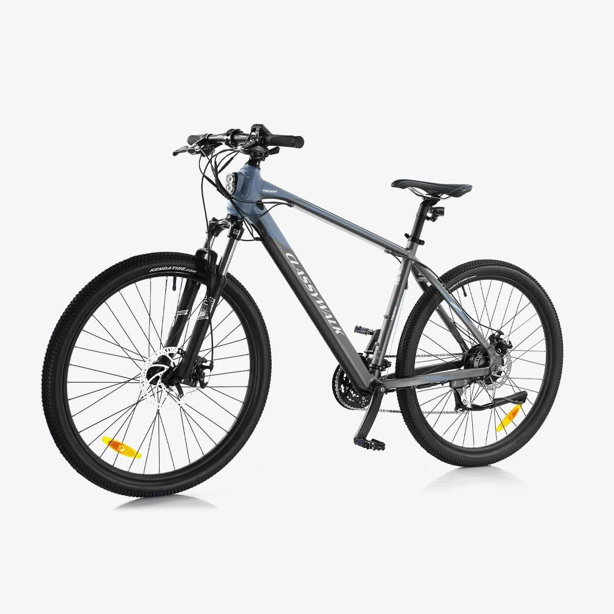

An example demonstrating the addition of artificially generated alternative texts for images in web documents using TensorFlow.js by Frode Eika Sandnes, aug. 2021.
Run via (live) server to avoid CORS errors. Then inspect the modified alt-attributes of the image elements (e.g. using developer tools in Chrome).
